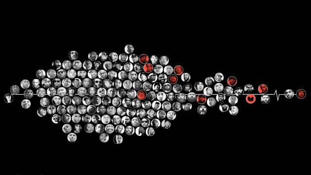

Topics
-

The Winningest Cities in North American Sports
What makes a titletown?
-

A visual history of every Air Jordan
Michael Jordan is the OG (both in basketball and sneakers). Watch how the design of his iconic Air Jordan changes over the last 32 years.
-

The Most-Viewed NBA Plays in 2017-18
Warning: this video contains a high dosage of LeBron footage.
-
One-Hit Wonders in Sports
The greatest single-season anomalies in the last 30 years.
-
What is a Superteam in the NBA?
You Define It.
-
The Most Timeless NBA Plays
Historic NBA games and plays, ranked by YouTube views.
-
30 Years of American Anxieties
What 20,000 letters to an advice columnist tell us about whatand whoconcerns us most.
-
What Does the Path to Fame Look Like?
Tracking the rise in popularity from Cardi B to Carson Wentz.
-
A visual history of every Air Jordan
Michael Jordan is the OG (both in basketball and sneakers). Watch how the design of his iconic Air Jordan changes over the last 32 years.
-

The Celebrity Billboard Project
Tracking the popularity of cultural figures in 2018.
-
Women's Pockets are Inferior
If you wear women's clothes, you already know this. But now we've got the data to show it.
-
Life After Death on Wikipedia
What pageviews tell us about how famous people are remembered after they die.
-

Film or Digital?
Breaking down Hollywood's choice of shooting medium.
-

most engaging
The Structure of Stand-Up Comedy
The genius of Ali Wongs Netflix special.
-

Listen to Her: Gender on This American Life
The story behind the gender divide on This American Life.
-
She Giggles, He Gallops
Analyzing gender tropes in film with screen direction from 2,000 scripts.
-
The Office Dialogue in Five Charts
A breakdown of how every character contributed to the show.
-
Analyzing the Gender Representation of 34,476 Comic Book Characters
Female characters appear in superhero comics less often than males but how are they depicted?
-

most discussed
The World through the Eyes of the US
The countries that have preoccupied Americans since 1900.
-
A brief history of the past 100 years
An analysis of 12 decades of New York Times headlines
-

most buzzworthy
Population Mountains
This is a story about how to perceive the population size of cities.
-

most buzzworthy
Human Terrain
Visualizing the Worlds Population, in 3D.
-

Why the tech sector may not solve Americas looming automation crisis
5% of Americas employees may be replaced by robots, and transitioning them to become software developers seems to be a popular solution. Heres why it might be misguided.
-
We mapped out the road to gender parity in the House of Representatives
Exploring the last 100 years of women in politics through data and machine learning.
-

most viewed
Rappers, sorted by the size of their vocabulary
The number of unique lyrics used within artists first 35,000 lyrics
-

most engaging
Internet Boy Band Database
Every boy band to chart the Hot 100 since 1980.
-
The Most Emo Lyrics: Emo Rap vs. Dashboard Confessional
Who has the most emotionally vulnerable lyrics, emo rappers or Dashboard Confessional? Has Juice Wrld out-emod emo bands?
-
The Good, the Rad, and the Gnarly
An exploration into the music of skateboarding.
-
The Cultural Borders of Songs
We mapped last months #1 songs in 3,000 places. See where songs dominate across the globe.
-
Are Hit Songs Becoming Less Musically Diverse?
Data on whether todays hit artists are taking fewer risks and creating a narrower range of sounds.
-

most engaging
The Birthday Paradox Experiment
Your birthday twin is probably reading this right now. Because math.
-
Let's Learn About Waveforms
An interactive guide that introduces and explores waveforms.
-
Greetings from Mars
Exploring today's weather on Mars and in your area with the Curiosity Rover.
-
Seeing Earth from Outer Space
A visual history of satellites.